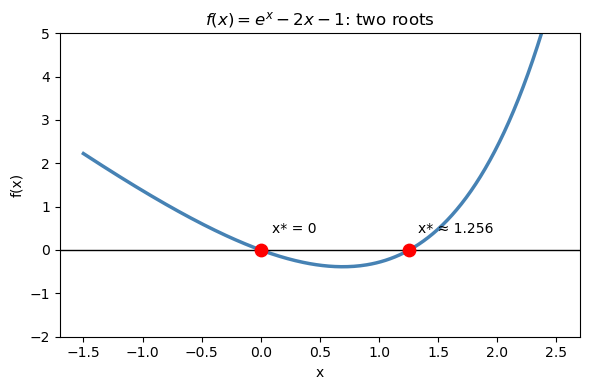
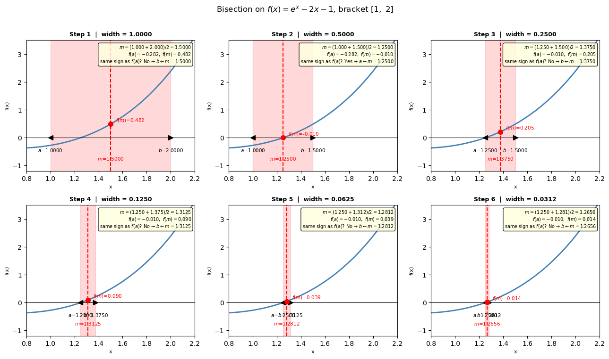
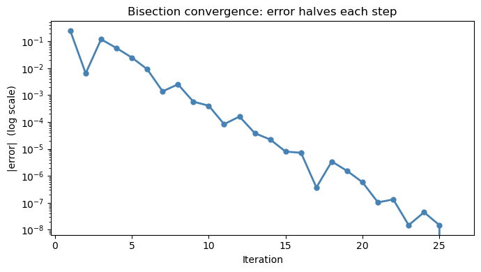
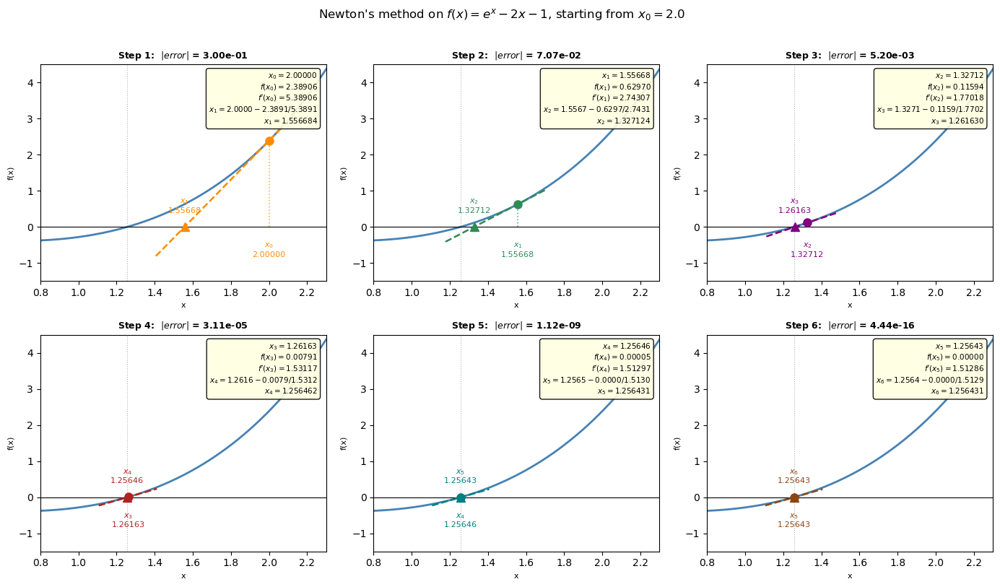
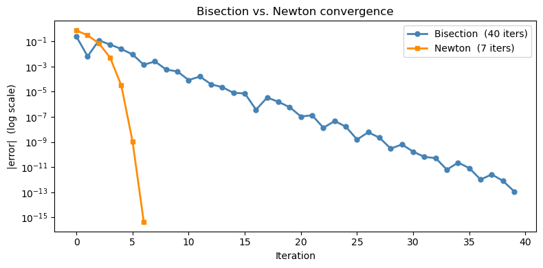
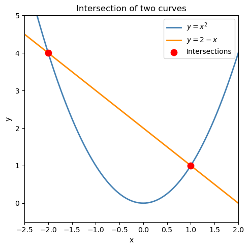

Chapter 16: Root Finding & Newton’s Method#
Topics Covered:
What is a root and why do we need to find it numerically?
Polynomial roots with
np.rootsBisection method: slow but guaranteed
Newton’s method: fast but requires a derivative
scipy.optimize.brentq: robust black-box root finderscipy.optimize.fsolve: systems of nonlinear equationsChE application: van der Waals equation, reaction equilibrium
Motivation: Equations You Cannot Solve by Hand Easily#
Chemical engineering is full of equations where the unknown appears in a complicated way — inside an exponential, a logarithm, or a cubic. For example:
Van der Waals equation of state (find molar volume \(V\) at given \(T\), \(P\)): $\(\left(P + \frac{a}{V^2}\right)(V - b) = RT\)$
Rearranging gives a cubic in \(V\) — three possible roots, and no simple formula for the one you want.
Antoine equation (find boiling point \(T_b\) at a given pressure \(P\)): $\(\log_{10} P = A - \frac{B}{C + T_b}\)$
Solvable analytically here, but the same structure embedded in a larger model is not.
Reaction equilibrium (find equilibrium conversion \(X_e\)): $\(K_{eq}(T) = \frac{X_e^2}{(1 - X_e)^2}\)$
For more complex stoichiometry the algebraic expression becomes intractable.
The strategy in all cases: rewrite as \(f(x) = 0\) and find the root numerically.
import numpy as np
import matplotlib.pyplot as plt
from scipy.optimize import brentq, fsolve
16.1 What Is a Root?#
A root (or zero) of a function \(f(x)\) is any value \(x^*\) where: $\(f(x^*) = 0\)$
Almost any equation can be rewritten in this form. For example:
Original equation |
Rewrite as \(f(x) = 0\) |
|---|---|
\(x^2 = 4\) |
\(f(x) = x^2 - 4\) |
\(e^x = 2x + 1\) |
\(f(x) = e^x - 2x - 1\) |
\((P + a/V^2)(V-b) = RT\) |
\(f(V) = (P + a/V^2)(V-b) - RT\) |
Geometrically, a root is where the curve \(y = f(x)\) crosses zero — where it intersects the x-axis.
The key idea: always plot your function first to see how many roots there are and roughly where they are.
# Example: f(x) = e^x - 2x - 1 has two roots
def f_demo(x):
return np.exp(x) - 2*x - 1
x = np.linspace(-1.5, 2.5, 300)
fig, ax = plt.subplots(figsize=(6, 4))
ax.plot(x, f_demo(x), 'steelblue', linewidth=2.5)
ax.axhline(0, color='k', linewidth=1)
# ax.scatter([0, np.log(2) + 0*1], # roots: x=0 and x≈1.256
# [0, 0], color='red', s=80, zorder=5, label='Roots')
# find second root precisely
root2 = brentq(f_demo, 1, 2)
ax.scatter([0, root2], [0, 0], color='red', s=80, zorder=5)
ax.annotate(f'x* = 0', (0, 0), textcoords='offset points', xytext=(8, 12), fontsize=10)
ax.annotate(f'x* ≈ {root2:.3f}', (root2, 0), textcoords='offset points', xytext=(6, 12), fontsize=10)
ax.set_xlabel('x'); ax.set_ylabel('f(x)')
ax.set_title(r'$f(x) = e^x - 2x - 1$: two roots')
ax.set_ylim(-2, 5)
plt.tight_layout()
plt.show()

16.2 Special Case: Polynomial Roots with np.roots#
If your equation happens to be a polynomial, NumPy can find all roots at once — including complex ones — using np.roots. This is much faster than running a bracketed solver multiple times.
How it works#
np.roots finds roots by computing the eigenvalues of the companion matrix of the polynomial. For a degree-\(n\) polynomial, the companion matrix is an \(n \times n\) matrix whose eigenvalues are exactly the roots. This is a linear algebra approach — no iteration, no initial guess needed.
Syntax: pass the coefficients from highest to lowest degree:
Example: van der Waals as a cubic polynomial#
Expanding the van der Waals equation \((P + a/V^2)(V - b) = RT\) gives a cubic in \(V\):
We can find all three roots directly with np.roots and pick the physically meaningful one.
R_gas = 0.08314 # L·bar / (mol·K)
a_co2 = 3.658 # L²·bar / mol²
b_co2 = 0.04286 # L/mol
T_co2 = 310.0 # K
P_co2 = 70.0 # bar
# Cubic coefficients: P*V^3 - (P*b + R*T)*V^2 + a*V - a*b = 0
coeffs = [P_co2,
-(P_co2*b_co2 + R_gas*T_co2),
a_co2,
-a_co2*b_co2
]
all_roots = np.roots(coeffs)
# print(all_roots)
# print(np.isreal(all_roots[0]))
# print(all_roots[0].real)
print("All roots of the van der Waals cubic:")
for i, r in enumerate(all_roots):
if np.isreal(r):
print(f" Root {i+1}: V = {r.real:.5f} L/mol (real)")
else:
print(f" Root {i+1}: V = {r} (complex — not physical)")
# The physical root is the real positive root greater than b
All roots of the van der Waals cubic:
Root 1: V = 0.21940 L/mol (real)
Root 2: V = (0.09582797990203343+0.032026426303389866j) (complex — not physical)
Root 3: V = (0.09582797990203343-0.032026426303389866j) (complex — not physical)
Under the hood: why eigenvalues = roots?#
Start with a degree-2 polynomial \(p(x) = x^2 + a_1 x + a_2\).
Its companion matrix is the \(2 \times 2\) matrix:
Now compute the characteristic polynomial of \(C\) — i.e., set \(\det(C - \lambda I) = 0\):
That is exactly \(p(\lambda)\). So \(\det(C - \lambda I) = 0\) is the same equation as \(p(\lambda) = 0\) — the eigenvalues of \(C\) are the roots of \(p\).
The same construction works for any degree \(n\): the companion matrix is always built so that its characteristic polynomial equals the original polynomial.
General form for a monic degree-\(n\) polynomial \(x^n + a_1 x^{n-1} + \cdots + a_n\):
The code below demonstrates this with a quadratic first, then the cubic.
# --- 2x2 demo: p(x) = x^2 - 5x + 6 (roots are 2 and 3) --- (x1 = 2, x2 =3)
# a1 = -5, a2 = 6
C2 = np.array([[ 5., -6.],
[ 1., 0.]])
print("2x2 companion matrix C:")
print(C2)
print(f"det(C - lI) = l^2 - 5l + 6 => eigenvalues: {np.linalg.eigvals(C2).real}")
print(f"np.roots result: {np.roots([1,-5,6])}")
print()
2x2 companion matrix C:
[[ 5. -6.]
[ 1. 0.]]
det(C - lI) = l^2 - 5l + 6 => eigenvalues: [3. 2.]
np.roots result: [3. 2.]
16.3 Bisection Method#
Mathematical background#
The bisection method is grounded in the Intermediate Value Theorem (IVT) from calculus:
If \(f\) is continuous on \([a, b]\) and \(f(a)\) and \(f(b)\) have opposite signs, then there exists at least one root \(x^* \in (a, b)\).
The sign change \(f(a) \cdot f(b) < 0\) is not just a programming check — it is the mathematical guarantee that a root exists in the interval.
Error analysis:
After \(n\) iterations, the interval has width \((b-a)/2^n\), so the root is known to within: $\(|x_n - x^*| \leq \frac{b - a}{2^n}\)$
To achieve a tolerance \(\epsilon\), you need at least \(n \geq \log_2\!\left(\dfrac{b-a}{\epsilon}\right)\) iterations.
For example, starting from an interval of width 1 and wanting \(\epsilon = 10^{-8}\): you need \(\log_2(10^8) \approx 27\) iterations. That is slow but completely predictable — this is why bisection is called linearly convergent.
Algorithm:
Start with \([a, b]\) where \(f(a) \cdot f(b) < 0\)
Compute midpoint \(m = (a + b)/2\)
If \(f(a) \cdot f(m) < 0\): root is in \([a, m]\) → set \(b = m\); else set \(a = m\)
Repeat until \((b - a)/2 < \epsilon\)
Strengths: Always works if the bracket is valid. No derivative needed. Error bound is known in advance.
Weaknesses: Slow (\(\sim 27\) iterations for 8 decimal places). Needs a bracket.
Visual: bisection step by step#
Each panel below shows one iteration of the algorithm:
The current bracket \([a, b]\) is shaded in red (the region we know contains the root)
The midpoint \(m = (a+b)/2\) is shown as a dashed vertical line
Based on the sign of \(f(a) \cdot f(m)\), we keep one half and discard the other
def f_demo(x):
return np.exp(x) - 2*x - 1
a0, b0 = 1.0, 2.0 # initial bracket
n_panels = 6
# Run bisection and record state BEFORE each step
states = [] # (a, b, m)
a, b = a0, b0
for _ in range(n_panels):
m = (a + b) / 2
states.append((a, b, m))
if f_demo(a) * f_demo(m) < 0:
b = m
else:
a = m
fig, axes = plt.subplots(2, 3, figsize=(13, 7.5))
axes = axes.flatten()
x_plot = np.linspace(0.8, 2.2, 400)
for k, (ak, bk, mk) in enumerate(states):
ax = axes[k]
# function curve
ax.plot(x_plot, f_demo(x_plot), "steelblue", lw=2)
ax.axhline(0, color="k", lw=0.8)
# shade current bracket
ax.axvspan(ak, bk, alpha=0.15, color="red")
# midpoint vertical line + dot
ax.axvline(mk, color="red", ls="--", lw=1.5)
ax.plot(mk, f_demo(mk), "ro", ms=7, zorder=5)
# label a and b on x-axis with their values
ax.plot(ak, 0, "k<", ms=7, clip_on=False)
ax.plot(bk, 0, "k>", ms=7, clip_on=False)
ax.annotate(f"$a$={ak:.4f}", (ak, 0), xytext=(0, -22),
textcoords="offset points", ha="center", fontsize=7.5, color="black")
ax.annotate(f"$b$={bk:.4f}", (bk, 0), xytext=(0, -22),
textcoords="offset points", ha="center", fontsize=7.5, color="black")
# label m with its value on the x-axis
ax.annotate(f"$m$={mk:.4f}", (mk, 0), xytext=(0, -35),
textcoords="offset points", ha="center", fontsize=7.5, color="red")
# drop a vertical line from f(m) down to x-axis to show f(m) value
ax.vlines(mk, 0, f_demo(mk), color="red", lw=1, ls=":", alpha=0.6)
ax.annotate(f"$f(m)$={f_demo(mk):.3f}", (mk, f_demo(mk)),
xytext=(8, 4), textcoords="offset points", fontsize=7.5, color="red")
# decision logic annotation
if f_demo(ak) * f_demo(mk) < 0:
decision = (f"$m = ({ak:.3f}+{bk:.3f})/2 = {mk:.4f}$\n"
f"$f(a)={f_demo(ak):.3f},\ f(m)={f_demo(mk):.3f}$\n"
f"same sign as $f(a)$? No → $b \\leftarrow m={mk:.4f}$")
else:
decision = (f"$m = ({ak:.3f}+{bk:.3f})/2 = {mk:.4f}$\n"
f"$f(a)={f_demo(ak):.3f},\ f(m)={f_demo(mk):.3f}$\n"
f"same sign as $f(a)$? Yes → $a \\leftarrow m={mk:.4f}$")
ax.set_title(f"Step {k+1} | width = {bk-ak:.4f}", fontsize=9, fontweight="bold")
ax.text(0.98, 0.97, decision, transform=ax.transAxes,
fontsize=7, va="top", ha="right",
bbox=dict(boxstyle="round,pad=0.3", fc="lightyellow", alpha=0.85))
ax.set_xlim(0.8, 2.2)
ax.set_ylim(-1.2, 3.5)
ax.set_xlabel("x", fontsize=8)
ax.set_ylabel("f(x)", fontsize=8)
plt.suptitle(r"Bisection on $f(x)=e^x-2x-1$, bracket $[1,\ 2]$", fontsize=12, y=1.01)
plt.tight_layout()
plt.show()

# from scipy.optimize import bisect
def bisection(f, a, b, tol=1e-8, max_iter=100):
"""Find root of f in [a, b] by bisection."""
assert f(a) * f(b) < 0, "f(a) and f(b) must have opposite signs"
history = [] # track midpoints for visualization
for i in range(max_iter):
m = (a + b) / 2.0
history.append(m)
if abs(f(m)) < tol or (b - a) / 2 < tol:
break
if f(a) * f(m) < 0:
b = m
else:
a = m
return m, history
# Find the root of f(x) = e^x - 2x - 1 near x = 1.2
def f_demo(x):
return np.exp(x) - 2*x - 1
root_bis, history = bisection(f_demo, a=1.0, b=2.0)
print(f"Root found: x* = {root_bis:.10f}")
print(f"f(x*) = {f_demo(root_bis):.2e}")
print(f"Iterations : {len(history)}")
# Plot convergence
errors = [abs(m - root_bis) for m in history]
fig, ax = plt.subplots(figsize=(7, 4))
ax.semilogy(range(1, len(errors)+1), errors, 'o-', color='steelblue', linewidth=2, markersize=5)
ax.set_xlabel('Iteration'); ax.set_ylabel('|error| (log scale)')
ax.set_title('Bisection convergence: error halves each step')
plt.tight_layout()
plt.show()
Root found: x* = 1.2564312071
f(x*) = -2.37e-09
Iterations : 26

(Optional) Using scipy.optimize.bisect#
SciPy provides a built-in bisection solver so you do not need to implement it yourself:
from scipy.optimize import bisect
root = bisect(f, a, b) # basic usage
root = bisect(f, a, b, xtol=1e-12) # tighter tolerance
root = bisect(f, a, b, args=(p1,)) # pass extra parameters to f
Requirements: same as hand-coded bisection — \(f(a)\) and \(f(b)\) must have opposite signs.
The result is identical to our hand-coded version, but bisect is optimized internally and handles edge cases for you.
from scipy.optimize import bisect
# scipy.optimize.bisect — same problem, one line
root_scipy = bisect(f_demo, 1.0, 2.0) # built in
root_hand, _ = bisection(f_demo, 1.0, 2.0) # custom function
print(f"scipy bisect: x* = {root_scipy:.10f}")
print(f"hand-coded: x* = {root_hand:.10f}")
print(f"difference: {abs(root_scipy - root_hand):.2e}")
scipy bisect: x* = 1.2564312086
hand-coded: x* = 1.2564312071
difference: 1.57e-09
16.4 Newton’s Method#
Mathematical background#
Newton’s method comes from a first-order Taylor expansion of \(f\) around the current guess \(x_n\):
We want \(f(x^*) = 0\), so we set the right-hand side to zero and solve for \(x\):
Geometrically: draw the tangent line to \(f\) at \((x_n,\, f(x_n))\). The next guess \(x_{n+1}\) is where that tangent line crosses the x-axis.
Convergence: quadratic vs. linear#
The error \(e_n = x_n - x^*\) satisfies:
The error is squared at each step — this is called quadratic convergence. Concretely:
Iteration |
Approximate error |
|---|---|
0 |
\(10^{-1}\) |
1 |
\(10^{-2}\) |
2 |
\(10^{-4}\) |
3 |
\(10^{-8}\) |
4 |
\(10^{-16}\) (machine precision) |
Compare to bisection: to reach \(10^{-16}\) from an interval of width 1 takes \(\log_2(10^{16}) \approx 53\) iterations, versus ~5 for Newton.
When Newton’s method can fail#
\(f'(x_n) \approx 0\): the tangent line is nearly horizontal and the next guess shoots far away
Poor initial guess: if \(x_0\) is far from the root, the tangent may point toward a completely different region
Multiple roots close together: the method may oscillate between roots
Rule of thumb: Plot \(f(x)\) first, pick \(x_0\) close to the root you want, and verify \(f'(x_0) \neq 0\).
Newton’s method step by step#
At each step we:
Evaluate \(f(x_n)\) and \(f'(x_n)\) at the current guess
Draw the tangent line at \((x_n,\ f(x_n))\): \(\quad y = f(x_n) + f'(x_n)(x - x_n)\)
Find where that tangent crosses zero → this is \(x_{n+1}\): $\(x_{n+1} = x_n - \frac{f(x_n)}{f'(x_n)}\)$
Stop when either:
\(|f(x_n)| < \epsilon\) (residual is small enough), or
\(|x_{n+1} - x_n| < \epsilon\) (step size is negligible)
Each panel below shows one iteration with the numbers filled in.
def f(x): return np.exp(x) - 2*x - 1
def df(x): return np.exp(x) - 2
x0 = 2.0
n_panels = 6
colors = ["darkorange", "seagreen", "purple", "firebrick", "teal", "saddlebrown"]
# Collect iterates
iterates = [x0]
for _ in range(n_panels):
xn = iterates[-1]
iterates.append(xn - f(xn) / df(xn))
true_root = brentq(f, 1.0, 2.0)
x_plot = np.linspace(0.8, 2.3, 400)
fig, axes = plt.subplots(2, 3, figsize=(14, 8))
axes = axes.flatten()
for k in range(n_panels):
ax = axes[k]
xn = iterates[k]
xn1 = iterates[k + 1]
fn = f(xn)
dfn = df(xn)
color = colors[k]
# --- curve ---
ax.plot(x_plot, f(x_plot), "steelblue", lw=2, zorder=2)
ax.axhline(0, color="k", lw=0.8)
ax.axvline(true_root, color="gray", lw=0.8, ls=":", alpha=0.6)
# --- tangent line through (xn, fn) ---
# extends a bit left and right so it clearly crosses zero
x_left = min(xn, xn1) - 0.15
x_right = max(xn, xn1) + 0.15
x_tan = np.linspace(x_left, x_right, 100)
y_tan = fn + dfn * (x_tan - xn)
ax.plot(x_tan, y_tan, "--", color=color, lw=1.8, zorder=3)
# --- vertical drop from (xn, fn) to x-axis ---
ax.vlines(xn, 0, fn, color=color, lw=1.2, ls=":", alpha=0.7)
# --- current point (xn, f(xn)) ---
ax.plot(xn, fn, "o", color=color, ms=8, zorder=5)
# --- next guess xn1 on x-axis ---
ax.plot(xn1, 0, "^", color=color, ms=9, zorder=6)
# --- x-axis labels ---
ax.annotate(f"$x_{k}$\n{xn:.5f}", (xn, 0),
xytext=(0, -30), textcoords="offset points",
ha="center", fontsize=8, color=color)
ax.annotate(f"$x_{{{k+1}}}$\n{xn1:.5f}", (xn1, 0),
xytext=(0, 14), textcoords="offset points",
ha="center", fontsize=8, color=color)
# --- annotation box: show the arithmetic ---
box_text = (
f"$x_{k} = {xn:.5f}$\n"
f"$f(x_{k}) = {fn:.5f}$\n"
f"$f'(x_{k}) = {dfn:.5f}$\n"
f"$x_{{{k+1}}} = {xn:.4f} - {fn:.4f}/{dfn:.4f}$\n"
f"$x_{{{k+1}}} = {xn1:.6f}$"
)
ax.text(0.97, 0.97, box_text, transform=ax.transAxes,
fontsize=7.5, va="top", ha="right",
bbox=dict(boxstyle="round,pad=0.35", fc="lightyellow", alpha=0.9))
ax.set_title(f"Step {k+1}: $|error|$ = {abs(xn1 - true_root):.2e}", fontsize=9, fontweight="bold")
ax.set_xlim(0.8, 2.3)
ax.set_ylim(-1.5, 4.5)
ax.set_xlabel("x", fontsize=8)
ax.set_ylabel("f(x)", fontsize=8)
plt.suptitle(
r"Newton's method on $f(x)=e^x-2x-1$, starting from $x_0=2.0$",
fontsize=12, y=1.01
)
plt.tight_layout()
plt.show()

from scipy.optimize import newton
def f(x): return np.exp(x) - 2*x - 1
def df(x): return np.exp(x) - 2 # f'(x) = e^x - 2
# Run 4 Newton steps from x0 = 2.0
x0 = 2.0
iterates = [x0]
for _ in range(4):
xn = iterates[-1]
iterates.append(xn - f(xn) / df(xn))
print(f"{'Step':>4} {'x_n':>14} {'f(x_n)':>14} {'|error|':>14}")
print("-" * 52)
true_root = brentq(f, 1, 2)
for i, xi in enumerate(iterates):
print(f" {i:>2} {xi:>14.10f} {f(xi):>14.2e} {abs(xi - true_root):>14.2e}")
Step x_n f(x_n) |error|
----------------------------------------------------
0 2.0000000000 2.39e+00 7.44e-01
1 1.5566837578 6.30e-01 3.00e-01
2 1.3271236710 1.16e-01 7.07e-02
3 1.2616298127 7.91e-03 5.20e-03
4 1.2564623176 4.71e-05 3.11e-05
(Optional) Using scipy.optimize.newton#
SciPy also provides a built-in Newton solver:
from scipy.optimize import newton
root = newton(f, x0) # secant method (no derivative needed)
root = newton(f, x0, fprime=df) # full Newton (faster, uses derivative)
root = newton(f, x0, fprime=df, tol=1e-12) # tighter tolerance
Without
fprime: SciPy uses the secant method — approximates the derivative from two nearby pointsWith
fprime: uses true Newton’s method with the analytical derivative
Providing fprime is faster and more reliable when you can compute \(f'(x)\).
# scipy.optimize.newton — same problem, one line
root_secant = newton(f, x0=2.0) # secant method (no fprime)
root_newton = newton(f, x0=2.0, fprime=df) # full Newton with derivative
print(f"scipy newton (secant): x* = {root_secant:.10f}")
print(f"scipy newton (Newton): x* = {root_newton:.10f}")
print(f"hand-coded Newton: x* = {true_root:.10f}")
print(f"difference (secant vs Newton): {abs(root_secant - root_newton):.2e}")
scipy newton (secant): x* = 1.2564312086
scipy newton (Newton): x* = 1.2564312086
hand-coded Newton: x* = 1.2564312086
difference (secant vs Newton): 4.44e-16
16.3.2 Newton vs. bisection: convergence comparison#
Notice how Newton’s error shrinks quadratically — the curve drops steeply compared to bisection’s straight linear decay on a log plot.
def newton(f, df, x0, tol=1e-12, max_iter=30):
x = x0
history = [x]
for _ in range(max_iter):
x = x - f(x) / df(x)
history.append(x)
if abs(f(x)) < tol:
break
return x, history
_, bis_hist = bisection(f, 1.0, 2.0, tol=1e-12)
_, newt_hist = newton(f, df, x0=2.0)
bis_errors = [abs(m - true_root) for m in bis_hist]
newt_errors = [abs(m - true_root) for m in newt_hist]
fig, ax = plt.subplots(figsize=(8, 4))
ax.semilogy(range(len(bis_errors)), bis_errors, 'o-', color='steelblue',
linewidth=2, markersize=5, label=f'Bisection ({len(bis_errors)} iters)')
ax.semilogy(range(len(newt_errors)), newt_errors, 's-', color='darkorange',
linewidth=2, markersize=5, label=f"Newton ({len(newt_errors)} iters)")
ax.set_xlabel('Iteration'); ax.set_ylabel('|error| (log scale)')
ax.set_title('Bisection vs. Newton convergence')
ax.legend()
plt.tight_layout()
plt.show()

16.5 scipy.optimize.brentq: The Practical Choice#
Mathematical background#
Brent’s method (1973) is the algorithm inside brentq. It is a hybrid that switches intelligently between three techniques:
Bisection — always makes progress, but slow (\(O(1/2^n)\))
Secant method — approximates the derivative using two recent points instead of computing it analytically: $\(x_{n+1} = x_n - f(x_n)\,\frac{x_n - x_{n-1}}{f(x_n) - f(x_{n-1})}\)\( This is like Newton's method but replaces \)f’(x_n)$ with a finite-difference slope. Converges superlinearly (order ~1.6) but has no bracket guarantee on its own.
Inverse quadratic interpolation — fits a quadratic through three recent \((f, x)\) pairs and uses its inverse to predict the root. Even faster than the secant method when \(f\) is smooth.
At each step, Brent’s method tries inverse quadratic interpolation or the secant step first. If either would step outside the current bracket, it falls back to bisection. This gives near-Newton speed with bisection’s guarantee — the best of both worlds.
Key syntax:
from scipy.optimize import brentq
root = brentq(f, a, b) # basic usage
root = brentq(f, a, b, xtol=1e-12) # tighter tolerance
root = brentq(f, a, b, args=(p1,)) # pass extra parameters to f
Requirements:
\(f\) must be continuous on \([a, b]\)
\(f(a)\) and \(f(b)\) must have opposite signs — if not, you get a
ValueErrorAlways plot first to confirm the sign change and locate the bracket
16.4.1 Finding the van der Waals molar volume#
The van der Waals equation of state for CO₂ at \(T = 310\) K, \(P = 70\) bar:
van der Waals constants for CO₂: \(a = 3.658\) L²·bar/mol², \(b = 0.04286\) L/mol.
Step 1: Always plot \(f(V)\) first to find a good bracket.
R = 0.08314 # L·bar / (mol·K)
a = 3.658 # L²·bar / mol² (CO2)
b = 0.04286 # L/mol (CO2)
T = 310.0 # K
P = 70.0 # bar
# Plot to find brackets (avoid V < b where the equation is undefined)
V_range = np.linspace(b + 0.001, 1.0, 500)
# Solve with brentq using the bracket found above
# Compare to ideal gas: V_ideal = RT/P
V_ideal = R * T / P
print(f"van der Waals molar volume : V = {V_root:.5f} L/mol")
print(f"Ideal gas molar volume : V = {V_ideal:.5f} L/mol")
print(f"Compressibility factor Z = PV/RT = {P*V_root/(R*T):.4f} (1.000 = ideal)")
print(f"Residual f(V_root) = {f_vdw(V_root):.2e}")
---------------------------------------------------------------------------
NameError Traceback (most recent call last)
Cell In[13], line 7
1 # Solve with brentq using the bracket found above
2
3
4 # Compare to ideal gas: V_ideal = RT/P
5 V_ideal = R * T / P
----> 7 print(f"van der Waals molar volume : V = {V_root:.5f} L/mol")
8 print(f"Ideal gas molar volume : V = {V_ideal:.5f} L/mol")
9 print(f"Compressibility factor Z = PV/RT = {P*V_root/(R*T):.4f} (1.000 = ideal)")
NameError: name 'V_root' is not defined
16.6 Systems of Nonlinear Equations: scipy.optimize.fsolve#
Mathematical background#
brentq handles one equation, one unknown. For \(n\) equations and \(n\) unknowns, we need to solve:
fsolve uses Newton’s method in multiple dimensions. Recall the scalar Newton step:
$\(x_{n+1} = x_n - \frac{f(x_n)}{f'(x_n)}\)$
In \(n\) dimensions, the derivative \(f'(x)\) becomes the Jacobian matrix \(J\), where each entry is a partial derivative: $\(J_{ij} = \frac{\partial F_i}{\partial x_j}\)$
The multidimensional Newton step becomes: $\(\mathbf{x}_{n+1} = \mathbf{x}_n - J(\mathbf{x}_n)^{-1}\, \mathbf{F}(\mathbf{x}_n)\)$
or equivalently, solve the linear system \(J(\mathbf{x}_n)\,\Delta\mathbf{x} = -\mathbf{F}(\mathbf{x}_n)\) and set \(\mathbf{x}_{n+1} = \mathbf{x}_n + \Delta\mathbf{x}\).
fsolve estimates \(J\) numerically via finite differences — you don’t need to derive it by hand.
Key differences from brentq#
Property |
|
|
|---|---|---|
Equations |
1 |
\(N\) |
Unknowns |
1 |
\(N\) |
Needs bracket |
Yes |
No |
Needs initial guess |
No |
Yes — critical |
Guaranteed to converge |
Yes (bracket valid) |
No |
Silent wrong answers |
No |
Possible — always verify |
Because fsolve has no bracket guarantee, it can converge to a wrong answer without warning. Always check residuals after solving.
Syntax:
from scipy.optimize import fsolve
def F(vars):
x, y = vars
return [eq1, eq2] # list of residuals, one per equation
solution = fsolve(F, x0=[x_guess, y_guess])
print(F(solution)) # must be near [0, 0]
16.5.1 Simple example: two nonlinear equations#
Find the intersection of \(y = x^2\) and \(y = 2 - x\): $\(\begin{cases} y - x^2 = 0 \\ y + x - 2 = 0 \end{cases}\)$
# Two intersection points — use different initial guesses to find each
sol1 =
sol2 =
print(f"Solution 1: x = {sol1[0]:.6f}, y = {sol1[1]:.6f} residuals: {equations(sol1)}")
print(f"Solution 2: x = {sol2[0]:.6f}, y = {sol2[1]:.6f} residuals: {equations(sol2)}")
# Visualize
Solution 1: x = -2.000000, y = 4.000000 residuals: [0.0, 0.0]
Solution 2: x = 1.000000, y = 1.000000 residuals: [0.0, 0.0]

16.7 Chemical Engineering Application: Reaction Equilibrium#
Problem setup#
Consider a gas-phase reaction at constant temperature and pressure: $\(\text{A} \rightleftharpoons 2\,\text{B}\)$
Starting with pure A (\(n_{A0} = 1\) mol, \(n_{B0} = 0\)), the equilibrium mole fractions are:
where \(X_e\) is the equilibrium conversion (fraction of A that reacted). The equilibrium condition at \(T = 600\) K, \(P = 2\) atm is:
with \(K_{eq} = 1.5\) at this temperature.
Goal: Find \(X_e\) by solving \(f(X_e) = K_p(X_e) - 1.5 = 0\).
P = 2.0 # atm
Keq = 1.5 # equilibrium constant at T=600K
def Kp_expr(X):
"""K_p as a function of conversion X (must equal Keq at equilibrium)."""
y_A = (1 - X) / (1 + X)
y_B = (2 * X) / (1 + X)
return (y_B**2 / y_A) * P
def f_equil(X):
return Kp_expr(X) - Keq
# --- Step 1: plot to find bracket ---
X_arr = np.linspace(0.01, 0.99, 300)
fig, ax = plt.subplots(figsize=(7, 4))
ax.plot(X_arr, Kp_expr(X_arr), 'steelblue', linewidth=2.5, label=r'$K_p(X)$')
ax.axhline(Keq, color='red', linestyle='--', linewidth=2, label=f'$K_{{eq}} = {Keq}$')
ax.set_xlabel('Conversion $X_e$'); ax.set_ylabel(r'$K_p(X)$')
ax.set_title(r'Find $X_e$ where $K_p(X) = K_{eq}$')
ax.legend()
plt.tight_layout()
plt.show()
# --- Step 2: solve with brentq ---
X_eq = brentq(f_equil, 0.01, 0.99)
y_A_eq = (1 - X_eq) / (1 + X_eq)
y_B_eq = (2 * X_eq) / (1 + X_eq)
print(f"Equilibrium conversion: X_e = {X_eq:.4f} ({100*X_eq:.1f}%)")
print(f"Mole fraction of A: y_A = {y_A_eq:.4f}")
print(f"Mole fraction of B: y_B = {y_B_eq:.4f}")
print(f"Check K_p(X_e) = {Kp_expr(X_eq):.6f} (target: {Keq})")
print(f"Residual f(X_e) = {f_equil(X_eq):.2e}")
How does equilibrium conversion change with pressure?#
Le Chatelier’s principle tells us that increasing pressure shifts A ⇌ 2B toward A (fewer moles), reducing \(X_e\). We can verify this computationally by solving the root-finding problem over a range of pressures.
pressures = np.linspace(0.5, 10.0, 100)
X_equil_list = []
for P_val in pressures:
def f_P(X):
y_A = (1 - X) / (1 + X)
y_B = (2 * X) / (1 + X)
return (y_B**2 / y_A) * P_val - Keq
X_equil_list.append(brentq(f_P, 0.01, 0.999))
fig, ax = plt.subplots(figsize=(7, 4))
ax.plot(pressures, np.array(X_equil_list) * 100, 'steelblue', linewidth=2.5)
ax.axvline(2.0, color='red', linestyle='--', linewidth=1.5, label='P = 2 atm (our case)')
ax.set_xlabel('Pressure (atm)')
ax.set_ylabel('Equilibrium conversion $X_e$ (%)')
ax.set_title(r'A $\rightleftharpoons$ 2B: higher pressure suppresses conversion')
ax.legend()
plt.tight_layout()
plt.show()
Chapter 16 Summary#
Method |
Section |
Tool |
Convergence |
Needs |
Use when |
|---|---|---|---|---|---|
Polynomial roots |
16.2 |
|
Exact (eigenvalue) |
Coefficients |
Equation is a polynomial |
Bisection |
16.3 |
(hand-coded) |
Linear \(O(1/2^n)\) |
Bracket \([a,b]\) |
Learning / guaranteed fallback |
Newton |
16.4 |
(hand-coded) |
Quadratic \(O(e^2)\) |
\(f'(x)\), good \(x_0\) |
You can derive the derivative |
Brent’s method |
16.5 |
|
Superlinear |
Bracket \([a,b]\) |
1 equation, 1 unknown |
Newton (N-D) |
16.6 |
|
Quadratic |
Initial guess |
N equations, N unknowns |
The root-finding workflow#
Rewrite your equation as \(f(x) = 0\)
Plot \(f(x)\) to count roots and identify brackets
Choose your tool — polynomial? use
np.roots. Single equation? usebrentq. System? usefsolve.Verify by checking that \(f(x^*) \approx 0\)
Common pitfalls#
np.rootsreturns all roots including complex ones — filter for real, physically meaningful values.brentqrequires a sign change across the bracket. If \(f(a)\) and \(f(b)\) have the same sign, it raises aValueError. Plot first.fsolvecan converge silently to a wrong answer. Always print the residuals.Newton’s method diverges when \(f'(x_n) \approx 0\). If the derivative is small near your guess, pick a different starting point.